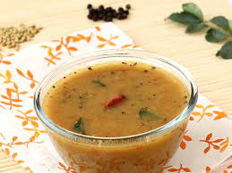

Mysore Rasam

A lentil based soup, typically served with hot steamed rice for lunch or dinner.
It is also served as soup for common cold problems as it is spiced with pepper.
Ingredients
- 2 tsp coriander seeds
- ½ tsp cumin seeds
- 2 tsp chana dal
- ½ tsp black pepper
- 2 dried kashmiri red chilli
Steps
- In a large kadai take chopped tomatoes and tamarind juice.
- Add curry leaves, turmeric powder, salt and jaggery.
- Cover and boil tamarind water for atleast 15 minutes.
- Add cooked toor dal and water.
- Boil for a minute till the dal turns frothy.
- Now add 2-3 tsp of mysore rasam powder and continue to boil for 2 minutes.
- In a small kadai add mustard seeds, hing, dried red chilli and curry leaves.
- Allow the tempering to splutter and pour over rasam.
- Serve mysore rasam garnishing with chopped coriander leaves.